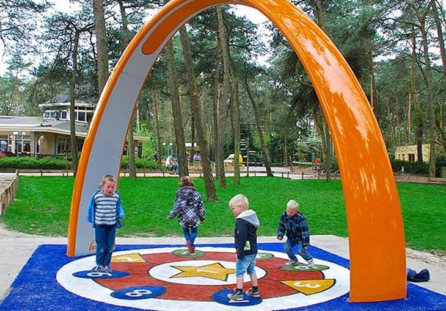

Na het hoorcollege over Playful interaction in week 2 ben ik verder gegaan met me meer verdiepen in het onderwerp. Het was interessant om te zien hoe een kleine aanpassing iets in je dagelijkse leven zoveel leuker gemaakt kon worden. Tijdens het zoeken naar voorbeelden kwam ik dit project dat bewegen stimuleert bij schoolkinderen en senioren.
Yalp Sona
Yalp is een Nederlands bedrijf dat verschillende interactieve spellen ontwerpt die buiten kunnen worden gebruikt. Hun doel hiermee is om kinderen meer buiten te krijgen. Kinderen bewegen te weinig en komen minder in contact met leeftijdsgenoten omdat ze veel minder buitenspelen en vaker binnen zitten gamen. Daarom probeert dit bedrijf leuke, interactieve en leerzame spellen te ontwikkelen. De spellen van Yalp kunnen zowel alleen als samen gespeeld worden. In dit geval is het een multiplayer spel waar meerdere kinderen aan mee kunnen doen.
Yalp Sona is een van hun producten. De Yalp Sona is een speelboog dat registreert hoe kinderen bewegen door middel van een bewegingssensor. De boog bevat een aantal verschillende spellen die gespeeld kunnen worden, kinderen kunnen een parcours afleggen of samen dansen maar ook leren om in het Chinees te tellen of codes te onthouden. Hiermee kunnen ze naast spelenderwijs bewegen ook dingen leren. De input is beweging, de output is geluid van de boog om de spellen te kunnen spelen.
Naast kinderen kan deze boog ook worden ingezet voor senioren. Via de website van Yalp kan je de spellen van de boog beheren en de instellingen aanpassen. Met een speciale softwareversie kunnen senioren ook spellen doen die helpen om gezond en fit te blijven. Om een spel te kiezen en te spelen hoef je alleen op de knop op de boog te drukken.
